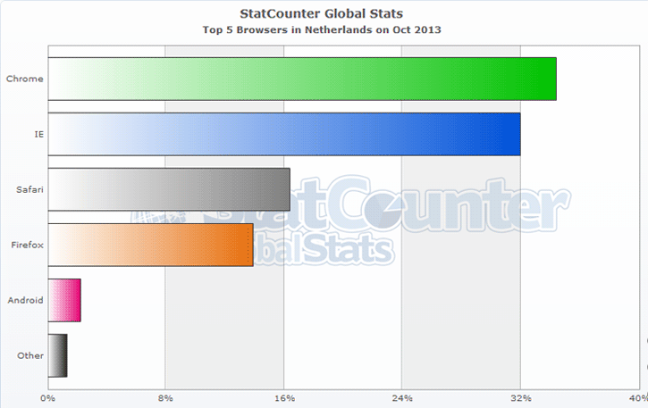

Introduction to

Why is WebRTC cool?
- Create real-time applications with just a few lines of JavaScript.
pc = new webkitRTCPeerConnection(servers);
pc.onaddstream = gotRemoteStream;
//...
function gotRemoteStream(e){
vid.src = URL.createObjectURL(e.stream);
}
-
Works cross-platform.
-
Save money on operations.
-
Without browser plugins!
WebRTC Cookbook
-
Get access to (streaming) audio, video or other data.
-
Find out how people can connect to me on the Internet.
-
Find out about supported media formats and browser capabilities.
-
Exchange this information with peers.
-
Stream your audio, video and data.
-
Enjoy your session.
What is WebRTC?
WebRTC is peer-to-peer multi-media communication for the browser.
-
Javascript APIs for control.
-
Protocol suite and infrastructure components for networking.
Standardization
What is WebRTC not?
Components
The major WebRTC APIs are:
-
DataChannel
Media
-
Opus Audio Codec
-
PCMA/PCMU (scaling algorithms for audio sampling)
-
DTMF
-
Video …
Under discussion
-
The video codec: VP8 and/or h264?
-
Use of SDP or alternatives.
Uptake
-
Browsers
-
Platforms
-
Market
Browsers
-
Support in Firefox, Chrome and Opera.
-
No support yet in Internet Explorer and Safari.
-
Firefox & Chrome are sort of interoperable since May 2013.
-
Minor API differences between browsers.
-
There are differences in implementation progress.
-
See also iswebrtcreadyyet.com
Browser reach is almost 50%!

Platforms
-
Major PC platforms are supported (Windows, Mac OSX, Linux).
-
Mobile is fragmented:
-
Android has support by Chrome and Firefox.
-
iOS: only through native SDKs.
-
Windows Mobile: no support.
-
Firefox OS: no support yet.
-
Market uptake
-
Lot of innovation:
-
Communication services.
-
Content Delivery Networks.
-
Gaming.
-
Developer frameworks.
-
-
For stats and metrics checkout: webrtcstats.com
Questions?
Next up…
- deep dive into the WebRTC architecture.